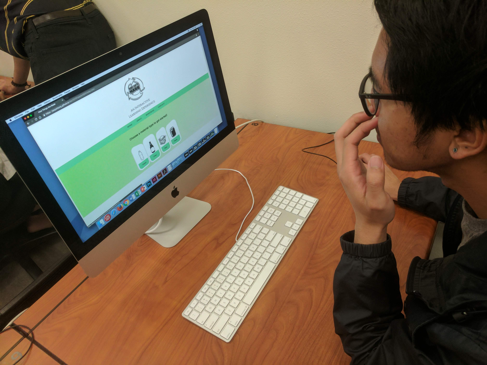

Target Audience Test Results

For my website test, I had three different users interacts with my website.
I learned many things from user feedback. The following is the notes I received:
- On the PET page: scroll down on page is not intuitive.
- Common uses seems clickable but is not clickable.
- The production process was not clear to interact with. Users thought it might be linked to the video.
- The language for the production process is complicated and hard to understand.
Based on user testing, here are the revisions I need to make:
- Improve typeface so that there is a better hierarchy to the different sections.
- Improve the design to also separate the different sections
- Remove mouse clicker button on hover over for "Common Uses"
- Simplify language in production process for all users to understand.